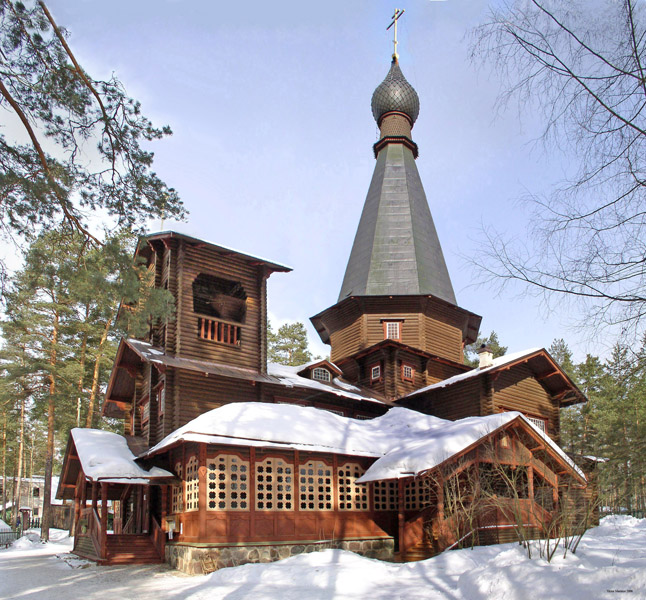

Tented Roof

Fig. 1. A tented roof is a type of polygonal hipped roof with steeply pitched slopes rising to a peak. It was common in Russia in the 1500s and 1600s. In the late 19th and early 1900s Russian Neo-Russian style architects immitated this element of the old-Russian style. Here is Kazan Church in Viritsa village near St. Petersburg (1914), an example of neo-Russian style. Note tented roof under the small onion dome.